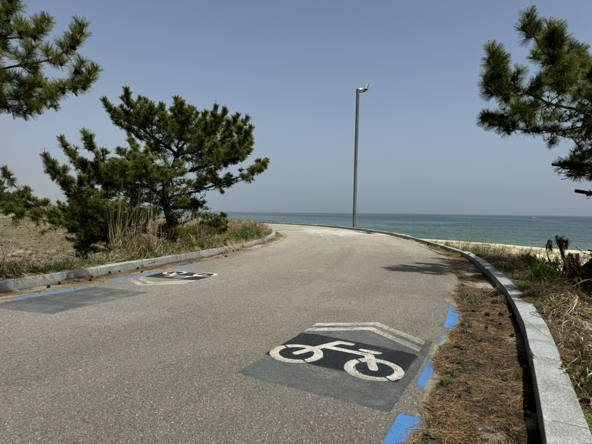

About the bicycle path system of South Korea
South Korea's Cross Country bike paths are a network of bike paths that consist of existing bike paths, re-purposed low-traffic agricultural roads, and decommissioned railroad infrastructures. Decommissioned train stations are repurposed as museums and rest areas.
South Korea's network of bike paths stretch from North to South and West to East. The system is subdivided into regional sections:
- ARA Bicycle Path (Incheon)
- HANGANG (riv.) Bicycle Path (Seoul Section)
- NAMHANGANG (riv.) Bicycle Path (Seoul-Chungju)
- BUCKHANGANG (riv.) Bicycle Path (Seoul-Chuncheun)
- SAEJAE Bicycle Path (Chungju-Sanju)
- NAKDONGGANG (riv.) Bicycle Path (Sangju-Busan)
- GEUMGANG (riv.) Bicycle Path (South ChungCheong Province and North Jeolla Province)
- YEONGSANGANG (riv.) Bicycle Path (South Jeolla Province)
- SEOMJINGANG (riv.) Bicycle Path (North and South Jeolla Province)
- Ocheon Bicycle Path (North ChungCheong Province)
- East Coast Bicycle Path (Gangwon Province)
- East Coast Bicycle Path (North Gyeongsang Province)
- Jeju Circular Bike Path (Jeju Island)
More details on these bicycle paths will be provided in the navigation page.



Certification System
There is something that makes these bicycle paths a little bit more special. You don't just ride on these paths. There is a certification system which uses decommissioned telephone booths as unmanned certification booths with stamps inside. Also called, "certification passports," Bike passports are sold at certification centres for 4,000 KRW along the bicycle path system.
Certification Classifications
There are four different certification classifications for cycle touring in South Korea: segment certification, cross-country certification, 4 rivers certification, and grand slam certification. To find out more about certifications you can achieve, please refer to the table below:
| Classification |
Requirements |
Award(s) for Completion |
| Segment Cycling Tour |
Successfully complete an individual segment:
- HANGANG (riv.) Cycling Tour (ARA Hangang River Lock → Chungju Dam)
- NAMHANGANG (riv.) Bicycle Path (Paldang Grand Bridge → Chungju Tangeumdae)
- BUCKHANGANG (riv.) Bicycle Path (Balgeun Gwangjang → Chuncheon)
- SAEJAE Bicycle Path (Chungju Tangeumdae → Sangju Sangpung Bridge)
- NAKDONGGANG (riv.) Bicycle Path (Andong Dam → Lower Basin of Nakdong River)
- GEUMGANG (riv.) Bicycle Path (Daecheong Dam → Lower Basin of Geum River)
- YEONGSANGANG (riv.) Bicycle Path (Damyang Dam → Lower Basin of Yeongsan River)
- SEOMJINGANG (riv.) Bicycle Path (Seomjin River Fitness Park → Baealdo Waterfront Park)
- Ocheon Bicycle Path (Haengchon Crossroads → Hapgang Park)
- East Coast Bicycle Path - Gangwon Segment (Unification Obervatory → Gopo Village)
- East Coast Bicycle Path - Gyeongbuk Segment (Uljin Sweet Fish Bridge → Yeongdeok Sunrise Park)
- Jeju Circular Bike Path (Yongduam → Yongduam)
|
Certification sticker for the zone completed |
| Cross Country Cycling Tour |
Successfully complete all of the following segments:
- HANGANG (riv.) Cycling Tour (ARA Hangang River Lock → Chungju Dam)
- NAMHANGANG (riv.) Bicycle Path (Paldang Grand Bridge → Chungju Tangeumdae)
- SAEJAE Bicycle Path (Chungju Tangeumdae → Sangju Sangpung Bridge)
- NAKDONGGANG (riv.) Bicycle Path (Andong Dam → Lower Basin of Nakdong River)
|
Certificate of Completion and Certification Stickers (free), Certification Medal (Can be purchased at certification centres) |
| 4 Rivers Cycling Tour |
Successfully complete the following segments:
- HANGANG (riv.) Cycling Tour (ARA Hangang River Lock → Chungju Dam)
- NAMHANGANG (riv.) Bicycle Path (Paldang Grand Bridge → Chungju Tangeumdae)
- BUCKHANGANG (riv.) Bicycle Path (Balgeun Gwangjang → Chuncheon)
- NAKDONGGANG (riv.) Bicycle Path (Andong Dam → Lower Basin of Nakdong River)
- GEUMGANG (riv.) Bicycle Path (Daecheong Dam → Lower Basin of Geum River)
- YEONGSANGANG (riv.) Bicycle Path (Damyang Dam → Lower Basin of Yeongsan River)
|
| Grand Slam Cycling Tour |
Successfully complete all of the listed segments. |